DJI Air 3S
現在の主力機。工場の屋根や構造物など、現場全体を見渡す確認に活用。
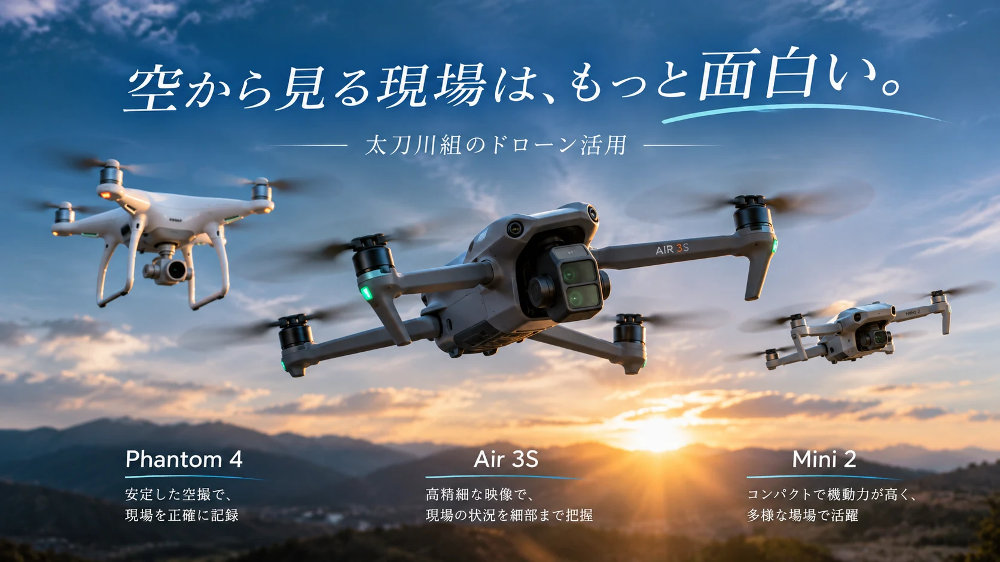
図面や地上からの視界だけでは分かりにくい屋根・高所・構造物の位置関係。ドローンで現況を確かめ、アクセス方法や資材搬入、作業手順を検討するための材料にします。撮影だけを目的とするサービスではなく、建設工事の現場判断に活かす取り組みです。
現在の主力機。工場の屋根や構造物など、現場全体を見渡す確認に活用。
映像をその場で共有する体験を重視した機体。旧DJI Gogglesとの組み合わせを含め、復活計画を進めています。
小型ならではの取り回しを活かし、狭い場所の確認を想定。復活計画中の機体です。
Phantom 4・Mini 2は飛行許可を取得済みですが、機体の整備完了・飛行可能状態を示すものではありません。飛行可否は現場条件・許可条件・安全確保を確認して判断します。
高所の状態や周辺設備との位置関係を把握し、追加調査や施工計画の検討に役立てます。
作業場所までの経路、資材の移動、仮設設備の配置を検討する手掛かりにします。
足場や高所作業車など、現場に適した手段を費用・作業負担・安全条件から考えます。
資料と現場を照合し、必要に応じて上空からも確認。
足場・高所作業車・搬入方法などを検討。
作業方法や費用に関わる条件を説明。
担当範囲と必要な体制を確認して進めます。
東京都江戸川区内の工場で行った、屋根トタン板取り換え工事です。太刀川組の社員が屋根下に足場を組み、既存屋根材をガルバリウム鋼板の波板へ順次張り替えました。その過程を実際のドローン空撮写真4枚で紹介します。
施工場所東京都江戸川区内の工場
当社の施工屋根下の足場・屋根材の順次交換
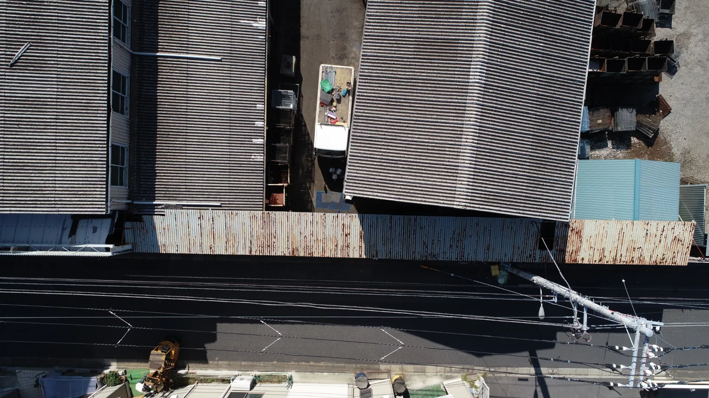
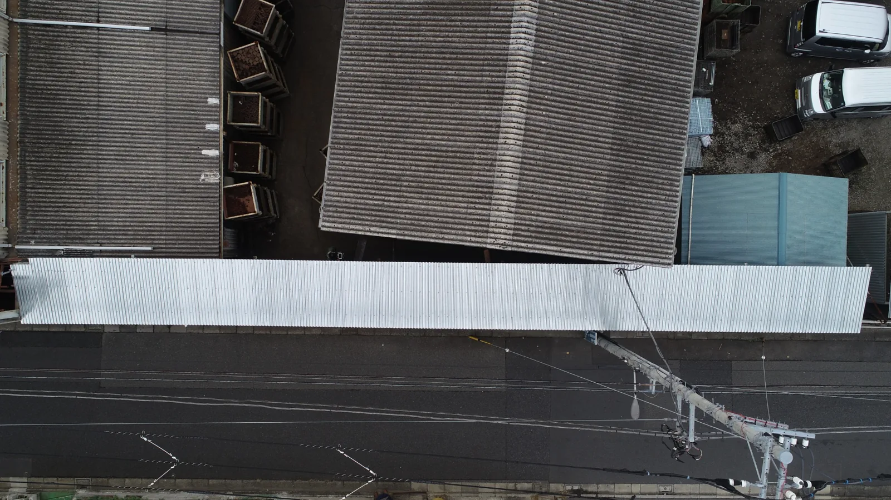
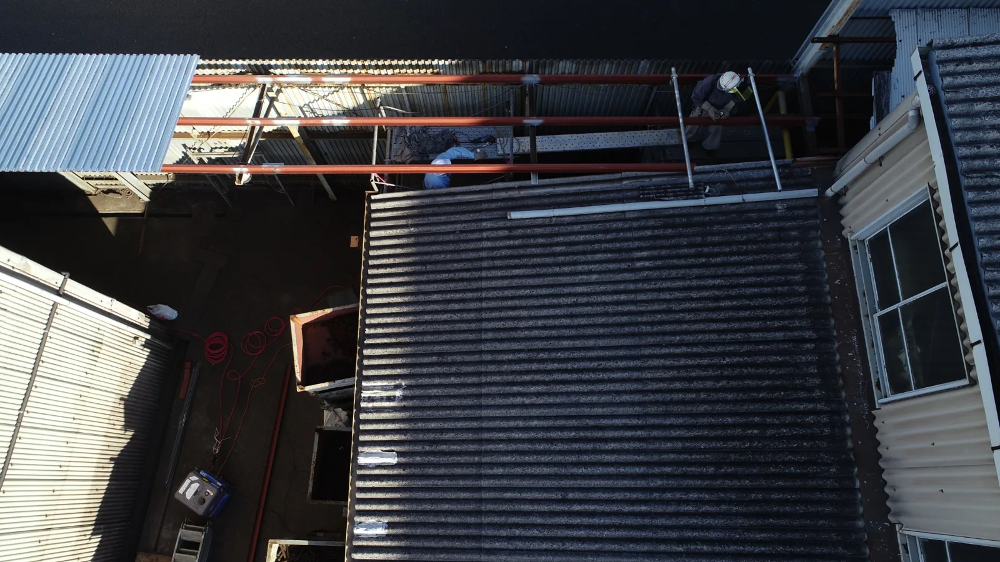
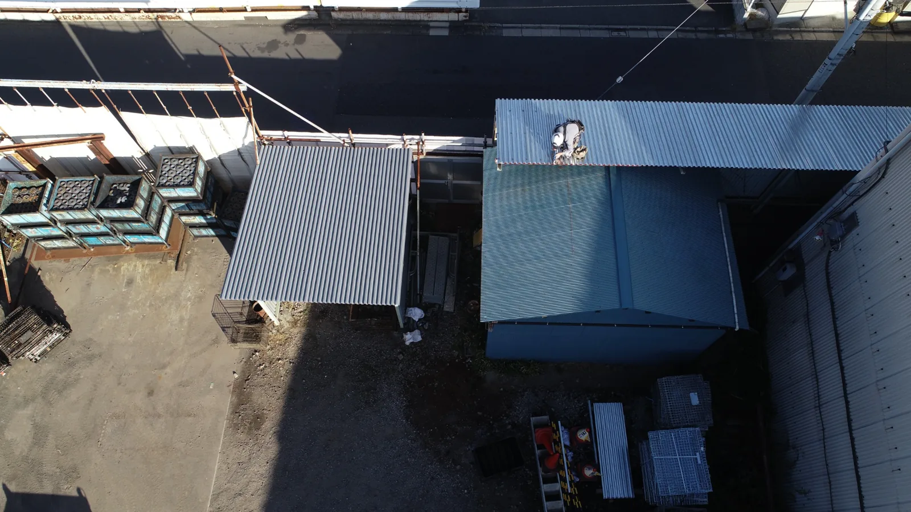
既存鉄骨が一直線ではなかったため、屋根材の角度を少しずつ調整しながら張りました。既存の形状に合わせて施工を進めた点が、この現場で工夫したところです。
掲載写真は、当社が施工した屋根トタン板取り換え工事の記録です。写真に写る工場全体や、隣接する屋根すべてを交換したことを示すものではありません。
千葉県内の住宅で、雨樋工事の見積依頼を受け、ドローンを使って屋根・雨樋周辺の状況を確認しました。その際、当初のご依頼とは別に、屋根上のアンテナの異常を発見。確認した状況を施主様に報告しました。アンテナの修理・撤去など、その後の対応は施主様の判断に委ねています。
調査場所千葉県某所の住宅
当社の対応雨樋見積の現地調査・異常の発見と報告
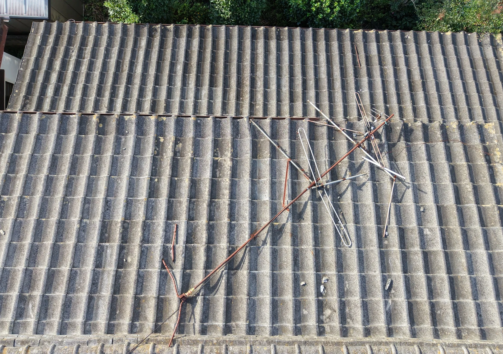
本事例は現地調査で状況を確認し、施主様に報告した記録です。当社によるアンテナの修理・撤去や、雨樋工事の受注・施工完了を示すものではありません。
既存建物に接続する建屋の増築工事を、施工前から完成まで継続してドローンで撮影しました。花壇撤去、掘削、基礎施工、鉄骨・屋根・外壁施工へと進む現場の変化を、上空から確認できます。
既存建物との接合部が屋根裏に位置し、裏側からボルトを締め付けられなかったため、ITハンガーを用いてカットティーを固定する方法を採用しました。現場条件に合わせて施工方法を工夫した事例です。
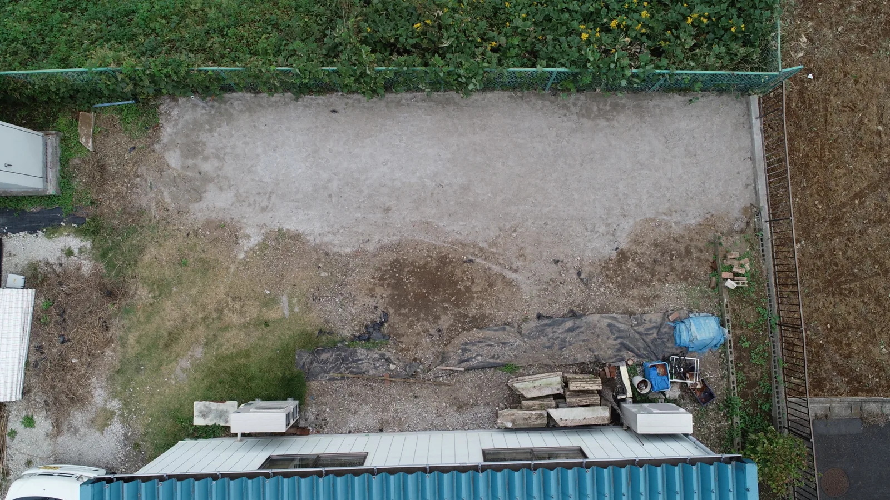
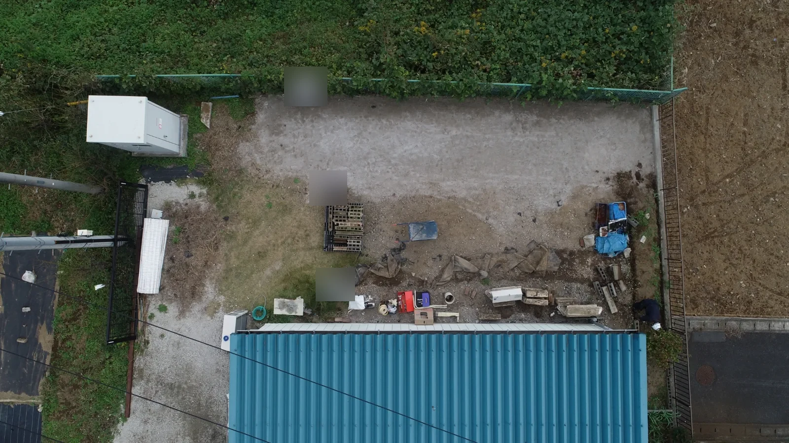
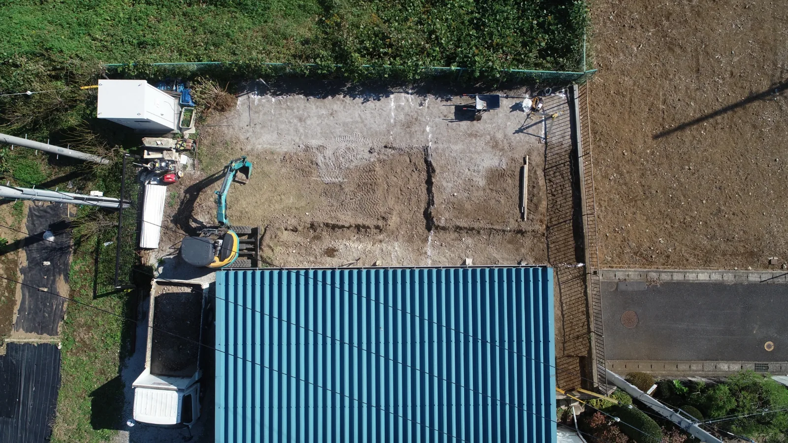
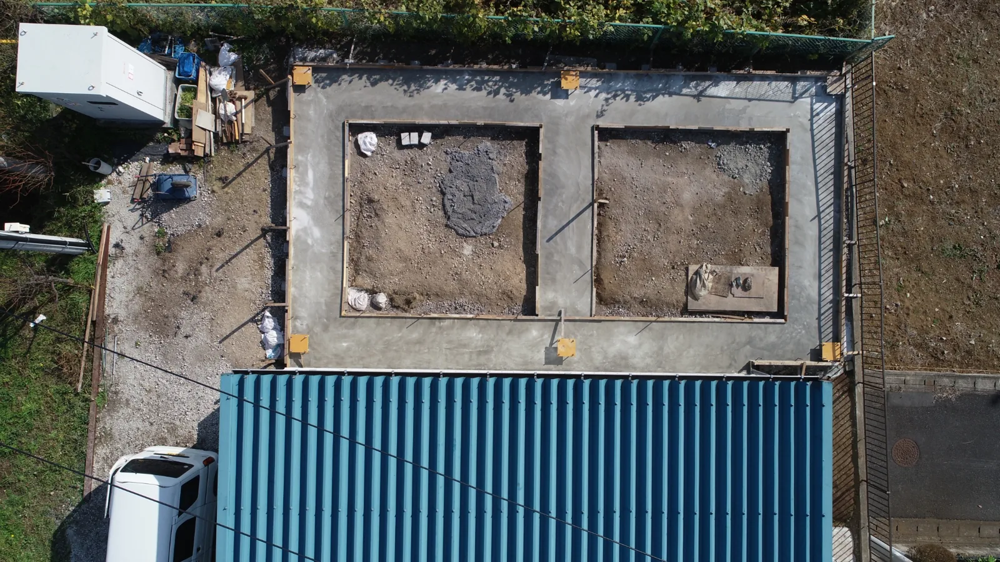
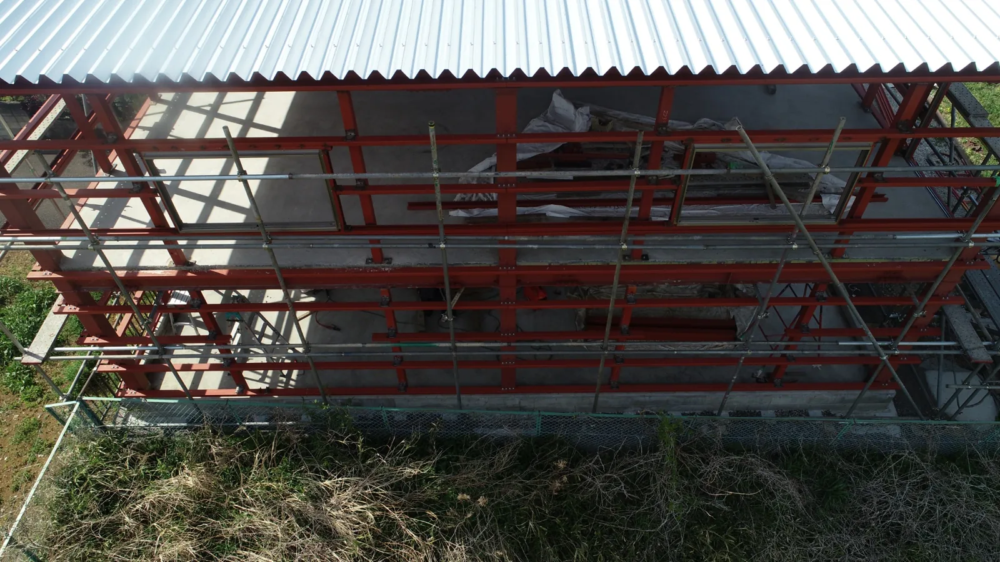
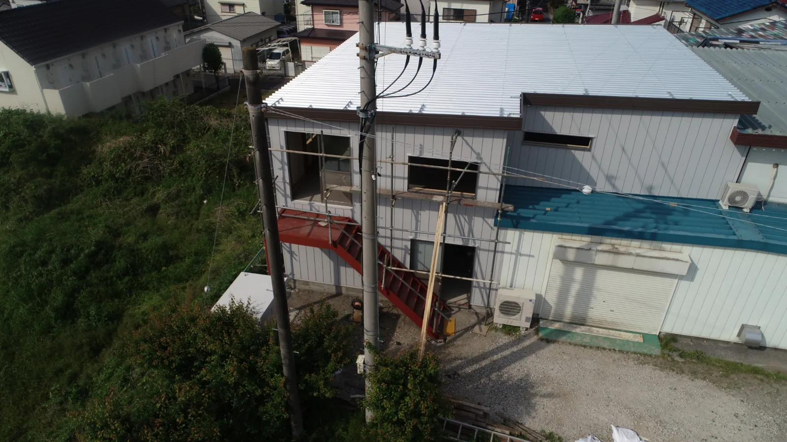
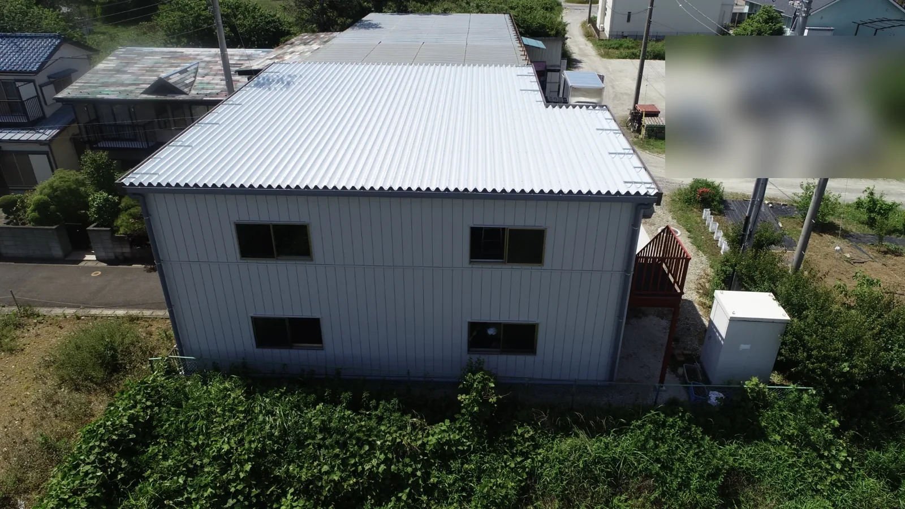
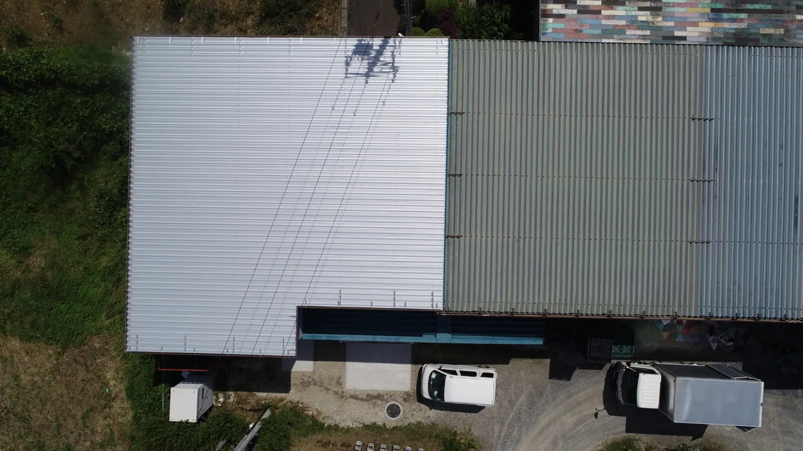
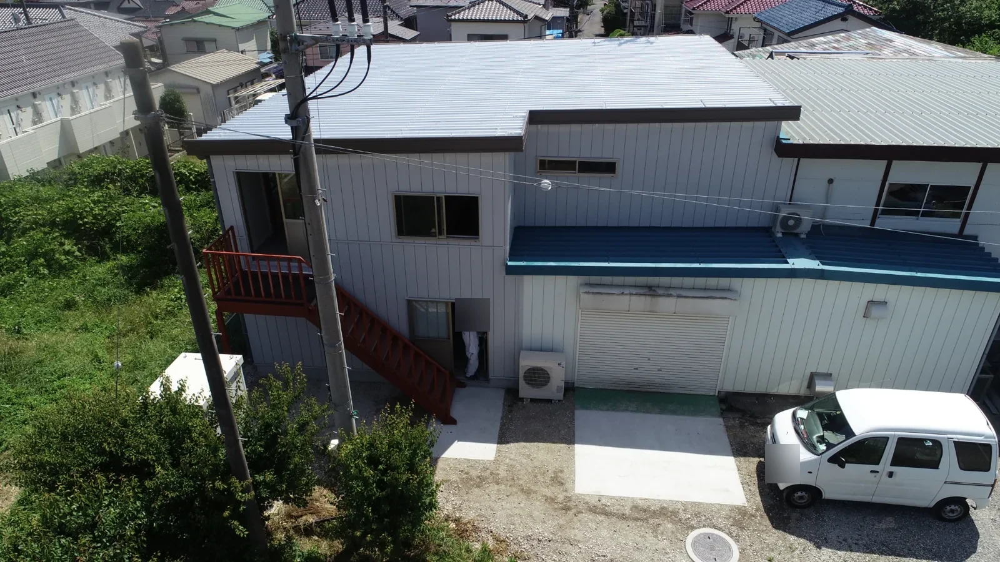
掲載写真は施工進捗を記録したものです。撮影範囲に含まれる周辺建物等の施工を示すものではありません。
造成工事の進捗をドローンで記録しました。異なる時点の地表をほぼ真上から撮影することで、地表の状態や作業範囲の変化を比較できます。
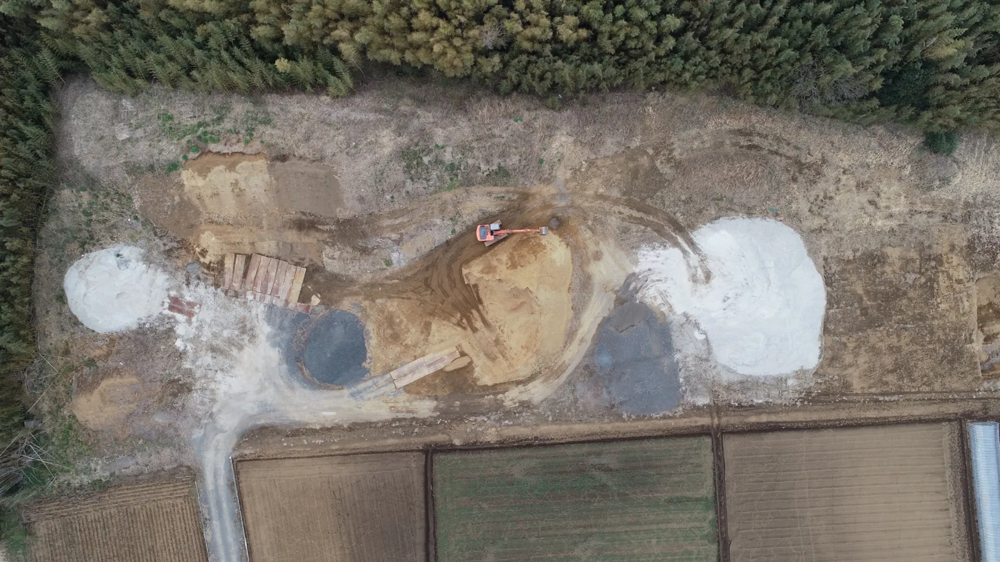
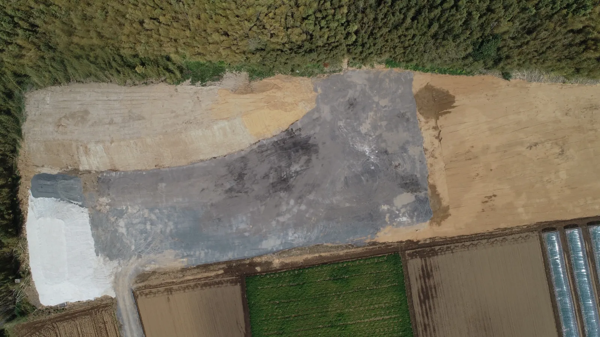
2時点の地表の状態を比較する記録です。使用材料の種類や厳密な工程区分、工事全体の完了を示すものではありません。写真に写る周辺の土地・施設すべてを当社が施工したことを示すものではありません。
工場や既存構造物の補修・改修について、現場条件を確認しながら施工方法をご提案します。ドローンの使用可否や調査範囲は案件ごとに検討します。
工事について相談する